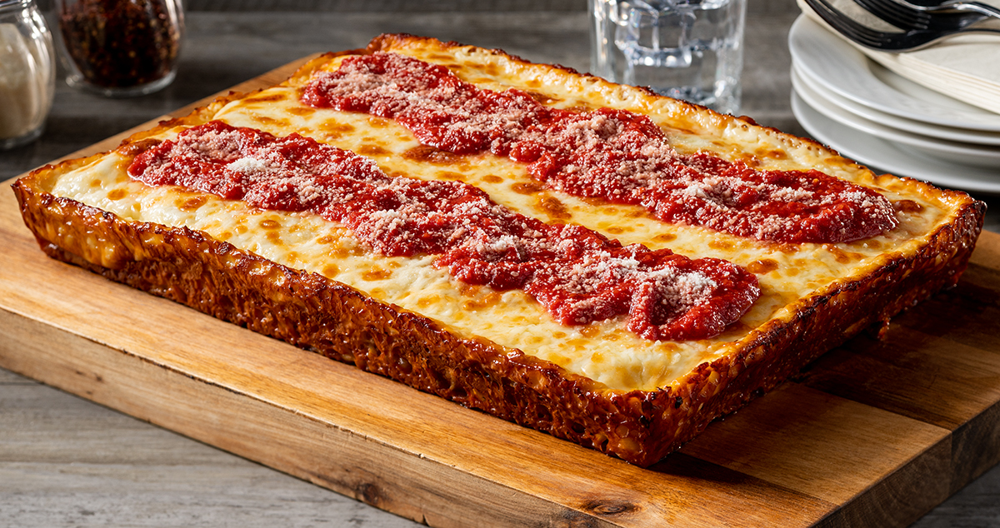

The Dough is chilled like a mofo.

- 825 grams flour
- 500 grams water
- 2 grams instant dry yeast
- 16.5 grams salt
- 12.5 grams oil
- Mix flour and water to hydrolozye for 20 minutes
- Stir in yeast
- Mix flour and water in stand mixer
- Slowly incorporate yeast
- Mix for a wee bit
- Add salt and oil